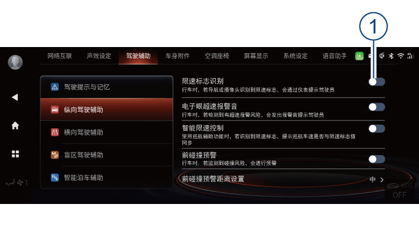

表示识别到普通限速，包括但不限于一般限速牌、组合限速牌、分车道限速牌、电子眼限速、区间限速。
限速标志识别*
限速标志识别简称TSR。TSR通过安装在前挡风玻璃上的智能前向摄像头探测前方道路上的限速牌，同时融合音响系统导航透出的数据，为驾驶员提供限速信息，在超过限速值时提醒驾驶员已超速。
开启和关闭
进入音响系统，切换至“系统设置→驾驶辅助→纵向驾驶辅助”界面，短按“限速标志识别”右侧 软按键①设置开启或关闭限速标志识别功能。
软按键①设置开启或关闭限速标志识别功能。
此功能开启后，当道路有限速标志时，组合仪表会显示限速标志，当车辆实际车速略大于限速标志值时，组合仪表限速标志会持续闪烁。
显示界面说明

功能局限性
即使限速标志识别已开启并工作，由于不可避免的环境因素和条件，其可能会错误地探测或根本探测不到限速牌。在以下情况，系统可能会受影响或不起作用：
– 摄像头被遮挡或被强光干扰。
– 在夜间或在隧道内光线弱时，没有打开前大灯或前大灯无法完全照射到限速牌。
– 限速牌部分或全部被遮挡。
– 限速牌磨损、模糊或被污垢。
– 限速牌摆放不规范，如扭曲、倾斜。
– 旁车道车辆、障碍物遮挡限速牌。
– 道路临时施工，限速属性已发生变更。
– 导航数据未及时在线更新或不准确。
– 道路不规范其它路牌被误识别为限速牌。
– 导航定位不准确导致输出非本车道路限速信息。
— 页面到底了 —